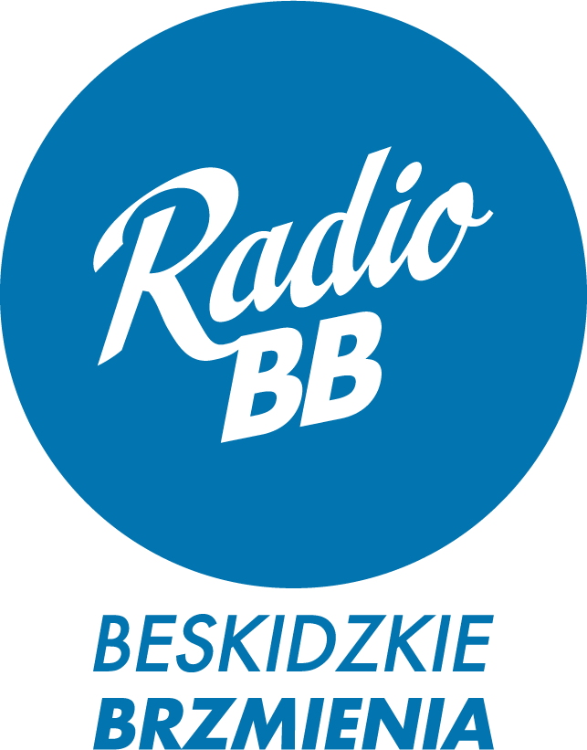
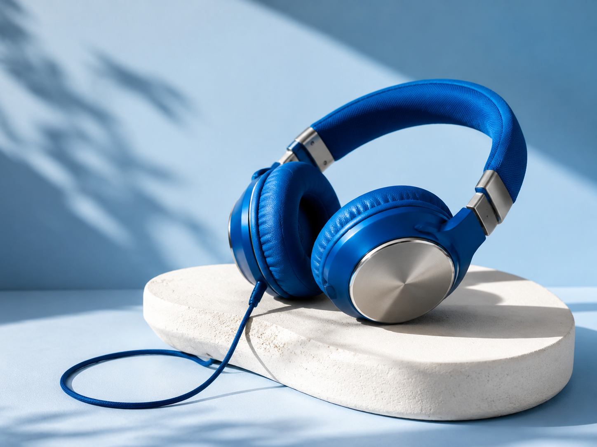

Beskidzka Grupa Medialna
Radio BB · Beskidzkie brzmienia
Wiadomości o każdej pełnej godzinie (00–23)
Dostarcza Beskidzka24.pl
Razem wiemy więcej
Radio BB stanowi integralną część Beskidzkiej Grupy Medialnej. Łączymy rzetelność dziennikarską prasy, zasięg telewizji internetowej oraz dynamikę radia cyfrowego.
Radio BB · Bielsko-Biała
Właściciel Radia BB i Beskidzkiej Grupy Medialnej
Ta aplikacja została stworzona z myślą o słuchaczach Radia BB, by ulubiona rozgłośnia była zawsze pod ręką – w samochodzie, pracy i domu.
Aplikacja samoczynnie zatrzyma audycję